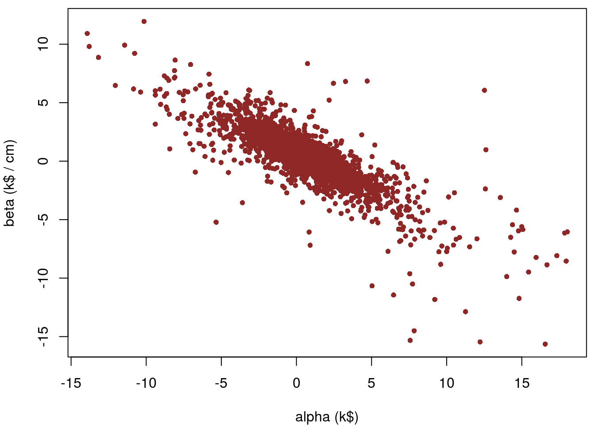
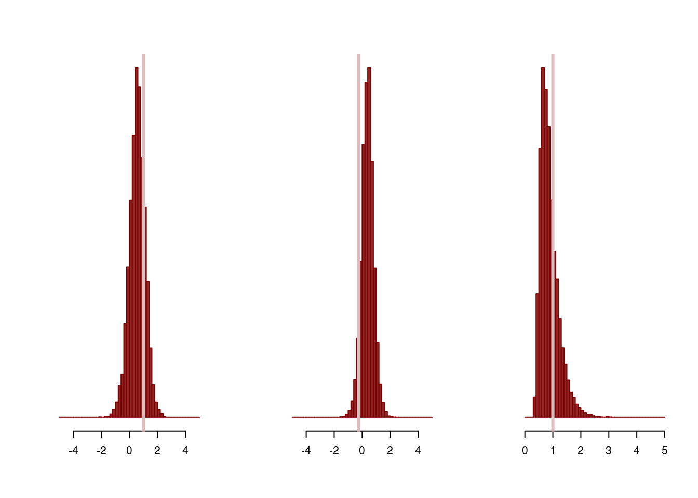
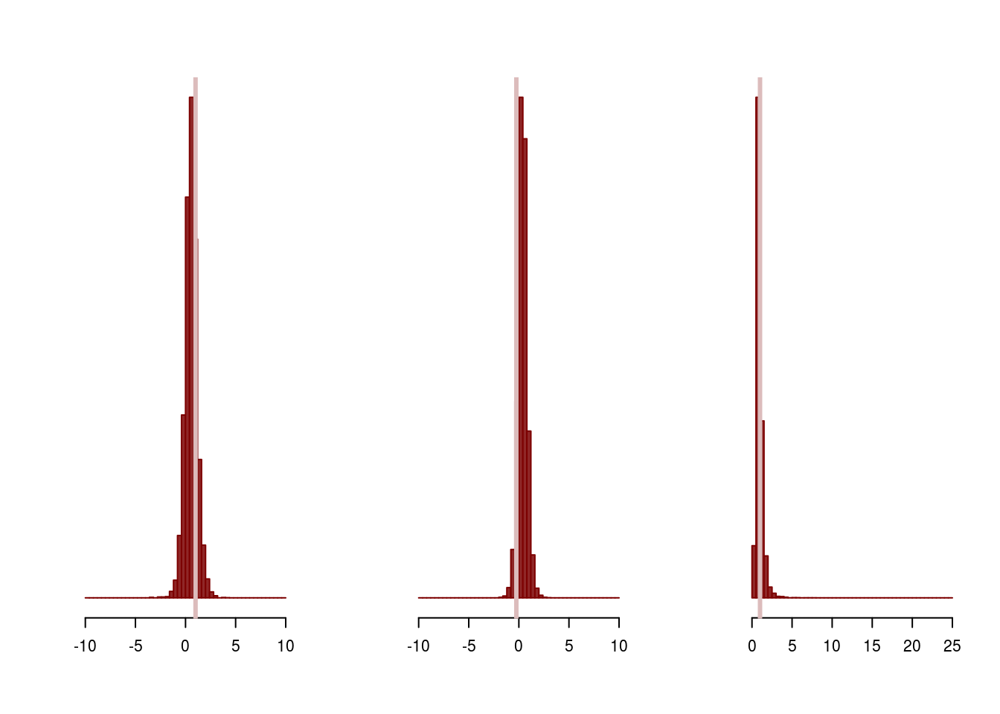
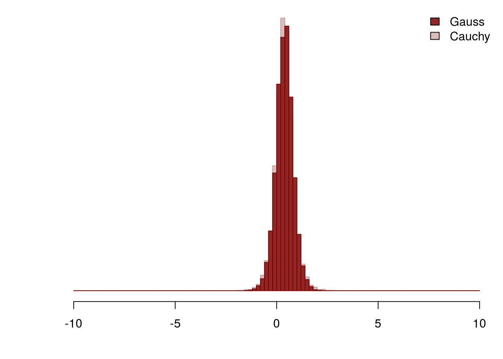
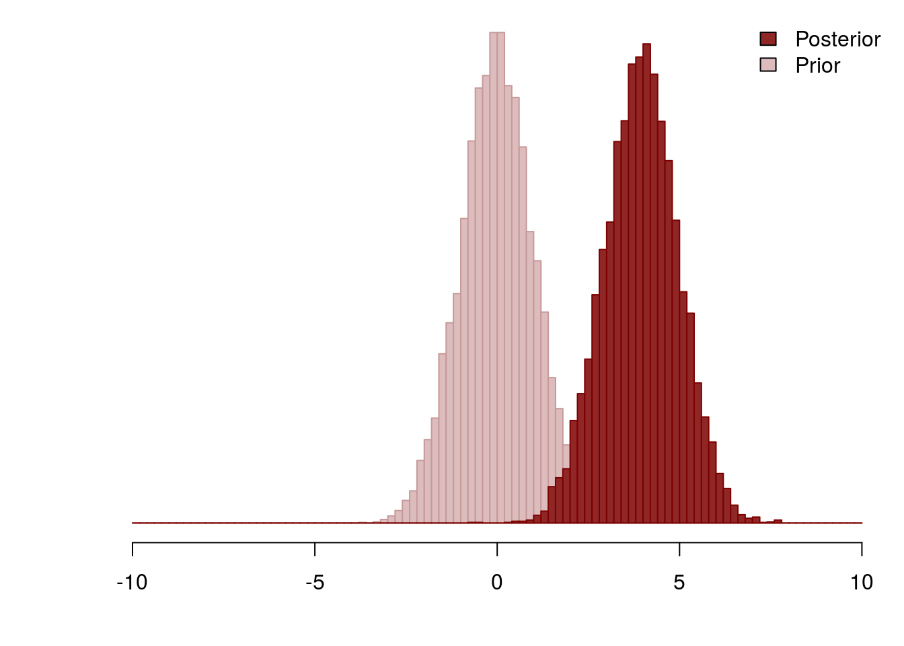
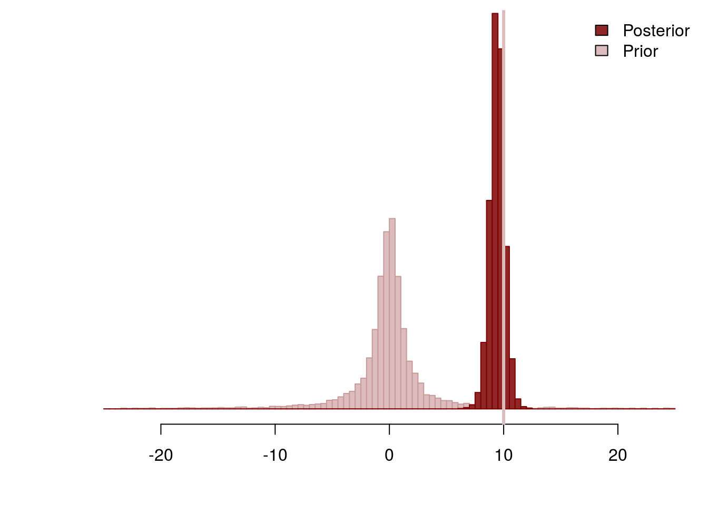

Weakly informative priors are an appealing modeling technique where the modeler identifies appropriate scales in a given analysis and uses those scales to introduce principled regularization into the analysis. Exactly how those scales are utilized, however, is not explicitly defined. Consequently the actual implementation of weakly informative priors can be ambiguous for practitioners.
In this case study I will consider two approaches for implementing weakly informative priors and demonstrate each effects the resulting analysis.
Weakly informative priors are especially critical when inferences are hindered with only weakly identifiable likelihoods, such as those arising from models with sparse data.
To that end, let’s say that we are analyzing a small company and we want to model how much daily rainfall, \(x\), affects daily income, \(y\), using only a few measurements. For this study we will simulate data assuming that the company typically makes a few thousand dollars, or kilodollars (k$), per day without any rain and that a heavy rainfall of a few centimeters per day can severely curtail income,
library(rstan)
rstan_options(auto_write = TRUE)set.seed(689934)
alpha <- 1 # k$
beta <- -0.25 # k$ / cm
sigma <- 1 # k$
N <- 5
x <- array(runif(N, 0, 2), dim=N) # cm
y <- array(rnorm(N, beta * x + alpha, sigma), dim=N) # k$
stan_rdump(c("N", "x", "y"), file="weakly_informed_regression.data.R")Assuming that the typical values of both rainfall and income are sufficiently large, we can ignore the fact that they are positive quantities and model their relationship with a linear regression,
writeLines(readLines("regression_no_prior.stan"))data {
int<lower=1> N;
vector[N] x; // Rainfall in cm
vector[N] y; // Income in k$
}
parameters {
real alpha; // k$
real beta; // k$ / cm
real<lower=0> sigma; // k$
}
model {
y ~ normal(beta * x + alpha, sigma);
}We can then fit this linear regression in Stan using a very long Markov chain to ensure precise quantification of our posterior distribution,
input_data <- read_rdump("weakly_informed_regression.data.R")
fit <- stan(file='regression_no_prior.stan', data=input_data,
iter=11000, warmup=1000, chains=1, seed=483892929, refresh=11000)
SAMPLING FOR MODEL 'regression_no_prior' NOW (CHAIN 1).
Chain 1, Iteration: 1 / 11000 [ 0%] (Warmup)
Chain 1, Iteration: 1001 / 11000 [ 9%] (Sampling)
Chain 1, Iteration: 11000 / 11000 [100%] (Sampling)
Elapsed Time: 0.033857 seconds (Warm-up)
0.232704 seconds (Sampling)
0.266561 seconds (Total)Unfortunately, the resulting posterior distribution is extremely diffuse and places significant probability on extreme parameter values,
print(fit)Inference for Stan model: regression_no_prior.
1 chains, each with iter=11000; warmup=1000; thin=1;
post-warmup draws per chain=10000, total post-warmup draws=10000.
mean se_mean sd 2.5% 25% 50% 75% 97.5% n_eff Rhat
alpha 0.70 0.04 1.81 -2.99 0.00 0.70 1.39 4.11 2033 1
beta 0.33 0.03 1.33 -2.12 -0.17 0.34 0.85 2.85 1917 1
sigma 1.60 0.07 1.91 0.56 0.82 1.14 1.71 5.30 821 1
lp__ -2.87 0.11 2.10 -8.70 -3.76 -2.28 -1.35 -0.60 364 1
Samples were drawn using NUTS(diag_e) at Thu Mar 2 15:30:53 2017.
For each parameter, n_eff is a crude measure of effective sample size,
and Rhat is the potential scale reduction factor on split chains (at
convergence, Rhat=1).The intercept and slope are particularly bad, with the Markov chain meandering far past the positive values that we had assumed,
c_light <- c("#DCBCBC")
c_light_highlight <- c("#C79999")
c_mid <- c("#B97C7C")
c_mid_highlight <- c("#A25050")
c_dark <- c("#8F2727")
c_dark_highlight <- c("#7C0000")params <- as.data.frame(extract(fit, permuted=FALSE))
names(params) <- gsub("chain:1.", "", names(params), fixed = TRUE)
par(mar = c(4, 4, 0.5, 0.5))
plot(params$alpha, params$beta, col=c_dark, pch=16, cex=0.8,
xlab="alpha (k$)",
ylab="beta (k$ / cm)")
In hindsight this awkward fit isn’t unexpected. The few data points only weakly inform the posterior which is then dominated by the flat priors. If we want to regularize our inferences then we need to incorporate better prior information into our analysis.
Why is the prior information contained in a flat prior so useless in our weakly informed regression? Although flat priors are often motivated as being “non-informative”, they are actually quite informative and pull the posterior towards extreme values that can bias our inferences.
To see this, consider a flat prior for the intercept, \(\alpha\), and the question of how much prior probability mass is in the interval \(-1 \le \alpha \le 1\). Because we can’t normalize the prior there is no well-defined answer, but we can at least consider the mass inside the interval relative to the mass outside of the interval, which is, well, infinite! In other words, there there is infinitely more prior mass that pulls inferences outside of the interval \(-1 \le \alpha \le 1\) than prior mass pulling inferences into the interval.
This logic, however, is exactly the same for the the interval \(-10 \le \alpha \le 10\), the interval \(-100 \le \alpha \le 100\), and in fact any finite interval. The flat prior favors the exterior of the any finite interval, pulling the posterior and any resulting inferences towards extreme values.
Although it is tempting to blame this pathological behavior on the fact that flat priors are not well-defined probability distributions and hence cannot be normalized, the behavior is not unique to flat priors. This bias towards extreme values is characteristic of any prior that is extremely diffuse and places significant probability mass at large values. In practice, priors such as \(\alpha \sim U(-1000, 1000)\) and \(\alpha \sim \mathcal{N}(0, 1000)\) can bias our inferences just as strongly as a flat prior.
The real issue is that these diffuse priors are incoherent with our actual prior beliefs. For example, basic physical and economic constraints limit the reasonable values of our parameters, and the linear model isn’t even valid for negative parameter values! Diffuse priors pull the posterior towards these extreme values, conflicting with even the most basic prior information.
Ultimately the misconception about diffuse priors being non-informative comes from reasoning about priors relative to the likelihood. Because diffuse priors distribute probability across such a large region of parameter space, likelihoods that identify much smaller regions of parameter space quickly overwhelm the prior distribution and dominate the posterior distribution. Hence diffuse priors supposedly “let the data speak for themselves”.
In complex models, however, it typically takes a significant amount of data for the likelihood to be able to identify a necessarily small region of parameter space. The more expensive and sparse the data and the more complex the likelihood, the more informative diffuse priors will be. If we want to make reasonable inferences in these models then we need more principled prior distributions that are actually coherent with our prior beliefs.
Weakly informative priors introduce scale information to regularize inferences. Scales are straightforward to reason about in applied problems, especially when units are carefully laid out, and they provide just enough information to regularize non-identified or weakly-identified likelihoods without strongly biasing the posterior away from reasonable parameter values. In order to construct weakly informative priors we need to first decompose our model into components, define default values, identify scales, then choose an explicit shape for our prior.
We cannot define scales, let alone reason about them, until we first decompose our model into interpretable components. In other words, we need to find a parameterization of our model where the parameters are particularly meaningful. The parameterization we have used in our linear regression, for example, is ideal as the intercept, slope, and measurement variability have intuitive interpretations: the intercept, \(\alpha\), determines the base income without any rainfall, the slope, \(\beta\), controls how a change in rainfall affects income, and the measurement variation, \(\sigma\), quantifies the natural variability of daily income.
Next we need to identify a reasonable default for our model and modify the initial parameterization such that this default is at zero. For example, this modification might require inverting the individual parameters if in the initial parameterization infinity is a more natural default than zero. Identifying an appropriate default in the first place follows similar logic to constructing a null hypothesis in frequentist methodologies. The parameterization of our linear regression is again already well-suited as a vanishing intercept, slope, or measurement variability corresponds to a trivial system with no income or weather interactions.
Once we have identified an appropriate parameterization we can determine the scales coherent with our prior knowledge of the system. Each scale partitions the parameters into extreme values above and reasonable values below. Perhaps the most straightforward way to reason about scales is to identify the units that one would use to describe the system of interest before the measurement. If we are building an experiment to study nanoscale effects then we wouldn’t use kiloscale units, right? Well we also wouldn’t want to put any significant prior probability on kiloscale effect sizes. In practice it is easier to make one last reparameterization into these natural units so that all of our scales are of order unity.
Finally we complete the specification of a weakly informative prior by complementing the scales with a shape to determine an explicit probability distribution. If we define the scale as \(\delta\), then we could for example, take a uniform distribution, \[\theta \sim U (-\delta, \delta).\] Such an extreme cutoff, however, removes not only extreme values far above the scale but also the relatively reasonable values just above the scale. What we really want is a shape that softly concentrates below the scale, such as a normal distribution, \[\theta \sim \mathcal{N}(0, \delta),\] a Cauchy distribution, \[\theta \sim \mathrm{Cauchy}(0, \delta),\] or even a Student-t distribution interpolating between the two. If the parameter of interest is positive then we can truncate these distributions at zero.
If we have chosen appropriate units then the scales reduce to unity and all of our weakly informative priors take a form like \(\theta \sim \mathcal{N}(0, 1)\) or \(\theta \sim \mathrm{Cauchy}(0, 1)\). It is important to note however, that these unit-scale priors alone do not specify a weakly informative prior! They are weakly informative only when our parameters have appropriate units.
In any case, all of these distributions strongly favor values within a few factors of the scale while disfavoring those values much further away. Although there is recent work being done to develop formal criteria for selecting the exact shape of the prior distribution, here we will consider only how the exact shape of a weakly informative prior qualitatively affects the resulting inferences.
When the scales are well-chosen all weakly informative priors behave similarly, regularizing the posterior by penalizing extreme parameter values. The exact shape of a weakly informative prior, however, does introduce some important differences in how strong that regularization is.
Let’s first consider a relatively light-tailed weakly informative prior that utilizes Gaussian and half-Gaussian distributions. Because we simulated the data already in natural units, the weakly informative priors are given simply by unit-scale Gaussians,
writeLines(readLines("regression_gauss_wi_prior.stan"))data {
int<lower=1> N;
vector[N] x; // Rainfall in cm
vector[N] y; // Income in k$
}
parameters {
real alpha; // k$
real beta; // k$ / cm
real<lower=0> sigma; // k$
}
model {
alpha ~ normal(0, 1);
beta ~ normal(0, 1);
sigma ~ normal(0, 1);
y ~ normal(beta * x + alpha, sigma);
}gauss_fit <- stan(file='regression_gauss_wi_prior.stan', data=input_data,
iter=11000, warmup=1000, chains=1, seed=483892929,
refresh=11000)
SAMPLING FOR MODEL 'regression_gauss_wi_prior' NOW (CHAIN 1).
Chain 1, Iteration: 1 / 11000 [ 0%] (Warmup)
Chain 1, Iteration: 1001 / 11000 [ 9%] (Sampling)
Chain 1, Iteration: 11000 / 11000 [100%] (Sampling)
Elapsed Time: 0.026805 seconds (Warm-up)
0.274839 seconds (Sampling)
0.301644 seconds (Total)We now have no problem fitting the model,
print(gauss_fit)Inference for Stan model: regression_gauss_wi_prior.
1 chains, each with iter=11000; warmup=1000; thin=1;
post-warmup draws per chain=10000, total post-warmup draws=10000.
mean se_mean sd 2.5% 25% 50% 75% 97.5% n_eff Rhat
alpha 0.55 0.01 0.55 -0.61 0.20 0.56 0.92 1.61 3763 1
beta 0.39 0.01 0.43 -0.49 0.12 0.39 0.66 1.25 3844 1
sigma 0.88 0.01 0.33 0.44 0.64 0.81 1.05 1.72 4078 1
lp__ -2.59 0.02 1.36 -6.11 -3.24 -2.24 -1.58 -1.01 3387 1
Samples were drawn using NUTS(diag_e) at Thu Mar 2 15:30:54 2017.
For each parameter, n_eff is a crude measure of effective sample size,
and Rhat is the potential scale reduction factor on split chains (at
convergence, Rhat=1).and the now-regularized posterior accurately captures the parameters that we used to simulate the data,
gauss_params <- as.data.frame(extract(gauss_fit, permuted=FALSE))
names(gauss_params) <- gsub("chain:1.", "", names(gauss_params), fixed = TRUE)
par(mfrow=c(1, 3))
alpha_breaks=10 * (0:50) / 50 - 5
hist(gauss_params$alpha, main="", xlab="alpha (k$)", breaks=alpha_breaks,
col=c_dark, border=c_dark_highlight,
xlim=c(-5, 5), yaxt='n', ann=FALSE)
abline(v=alpha, col=c_light, lty=1, lwd=3)
beta_breaks=10 * (0:50) / 50 - 5
hist(gauss_params$beta, main="", xlab="beta (k$ / cm)", breaks=beta_breaks,
col=c_dark, border=c_dark_highlight,
xlim=c(-5, 5), yaxt='n', ann=FALSE)
abline(v=beta, col=c_light, lty=1, lwd=3)
sigma_breaks=5 * (0:50) / 50
hist(gauss_params$sigma, main="", xlab="sigma (k$)", breaks=sigma_breaks,
col=c_dark, border=c_dark_highlight,
xlim=c(0, 5), yaxt='n', ann=FALSE)
abline(v=sigma, col=c_light, lty=1, lwd=3)
Given that we simulated so little data, the posterior is strongly affected by the weakly informative priors. Because these priors were chosen to be coherent with our prior information, however, even a prior-dominated posterior yields reasonable inferences!
To contrast, let’s now consider the more heavily-tailed priors given by Cauchy and half-Cauchy distributions. Once again our prescient choice of units admits unit-scale distributions,
writeLines(readLines("regression_cauchy_wi_prior.stan"))data {
int<lower=1> N;
vector[N] x; // Rainfall in cm
vector[N] y; // Income in k$
}
parameters {
real alpha; // k$
real beta; // k$ / cm
real<lower=0> sigma; // k$
}
model {
alpha ~ cauchy(0, 1);
beta ~ cauchy(0, 1);
sigma ~ cauchy(0, 1);
y ~ normal(beta * x + alpha, sigma);
}cauchy_fit <- stan(file='regression_cauchy_wi_prior.stan', data=input_data,
iter=11000, warmup=1000, chains=1, seed=483892929,
refresh=11000)
SAMPLING FOR MODEL 'regression_cauchy_wi_prior' NOW (CHAIN 1).
Chain 1, Iteration: 1 / 11000 [ 0%] (Warmup)
Chain 1, Iteration: 1001 / 11000 [ 9%] (Sampling)
Chain 1, Iteration: 11000 / 11000 [100%] (Sampling)
Elapsed Time: 0.02895 seconds (Warm-up)
0.239388 seconds (Sampling)
0.268338 seconds (Total)and once again the weakly informative prior adequately regularizes our inferences,
print(cauchy_fit)Inference for Stan model: regression_cauchy_wi_prior.
1 chains, each with iter=11000; warmup=1000; thin=1;
post-warmup draws per chain=10000, total post-warmup draws=10000.
mean se_mean sd 2.5% 25% 50% 75% 97.5% n_eff Rhat
alpha 0.56 0.01 0.61 -0.65 0.21 0.57 0.93 1.82 3680 1
beta 0.38 0.01 0.46 -0.54 0.11 0.37 0.65 1.33 3706 1
sigma 0.92 0.01 0.45 0.44 0.65 0.82 1.07 1.98 2692 1
lp__ -3.06 0.04 1.58 -7.15 -3.73 -2.61 -1.93 -1.34 1636 1
Samples were drawn using NUTS(diag_e) at Thu Mar 2 15:30:55 2017.
For each parameter, n_eff is a crude measure of effective sample size,
and Rhat is the potential scale reduction factor on split chains (at
convergence, Rhat=1).cauchy_params <- as.data.frame(extract(cauchy_fit, permuted=FALSE))
names(cauchy_params) <- gsub("chain:1.", "", names(cauchy_params), fixed = TRUE)
par(mfrow=c(1, 3))
alpha_breaks=20 * (0:50) / 50 - 10
hist(cauchy_params$alpha[abs(cauchy_params$alpha) < 10],
main="", xlab="alpha (k$)", breaks=alpha_breaks,
col=c_dark, border=c_dark_highlight,
xlim=c(-10, 10), yaxt='n', ann=FALSE)
abline(v=alpha, col=c_light, lty=1, lwd=3)
beta_breaks=20 * (0:50) / 50 - 10
hist(cauchy_params$beta[abs(cauchy_params$beta) < 10],
main="", xlab="beta (k$ / cm)", breaks=beta_breaks,
col=c_dark, border=c_dark_highlight,
xlim=c(-10, 10), yaxt='n', ann=FALSE)
abline(v=beta, col=c_light, lty=1, lwd=3)
sigma_breaks=25 * (0:50) / 50
hist(cauchy_params$sigma[cauchy_params$sigma < 25],
main="", xlab="sigma (k$)", breaks=sigma_breaks,
col=c_dark, border=c_dark_highlight,
xlim=c(0, 25), yaxt='n', ann=FALSE)
abline(v=sigma, col=c_light, lty=1, lwd=3)
Relative to the Gaussian prior, however, the Cauchy prior places a nontrivial amount of posterior mass into the tails, far above the given scale,
beta_breaks=20 * (0:100) / 100 - 10
gauss_hist <- hist(gauss_params$beta, breaks=beta_breaks, plot=FALSE)
cauchy_hist <- hist(cauchy_params$beta[abs(cauchy_params$beta) < 10],
breaks=beta_breaks, plot=FALSE)
par(mar = c(4, 4, 0.5, 0.5))
plot(cauchy_hist, col=c_light, border=c_light_highlight,
main="", xlab="beta (k$ / cm)", yaxt='n', ann=FALSE)
plot(gauss_hist, col=c_dark, border=c_dark_highlight, add=T)
legend("topright", c("Gauss", "Cauchy"), fill=c(c_dark, c_light), bty="n")
This weaker regularization can seriously impact computational performance, especially in models that utilize special functions that become difficult or impossible to compute for extreme inputs, such as ODE solvers or Gaussian process densities. Although the Cauchy prior forces most of the posterior within the specified scale, the heavy tail allows for the occasional extreme value that stresses the evaluation of the special functions and can drastically hinder computational performance. Consequently, heavy-tailed weakly informative priors must be employed with care in practice.
The differing behavior of weakly informative priors with different shapes becomes particularly striking when the scales are poorly-chosen, and the likelihood strongly favors parameter values that conflict with the priors.
To demonstrate this difference, let’s simulate a larger data set where the true intercept is above the scale of our chosen units,
alpha <- 10 # k$
beta <- -0.25 # k$ / cm
sigma <- 1 # k$
N <- 10
x <- runif(N, 0, 2) # cm
y <- rnorm(N, beta * x + alpha, sigma) # k$
stan_rdump(c("N", "x", "y"), file="wrong_scale.data.R")How this tension between the weakly informative prior and the likelihood manifests in the posterior is extremely sensitive to the exact shape of the weakly informative prior.
Let’s first consider the relatively light tail of a Gaussian prior distribution,
input_data <- read_rdump("wrong_scale.data.R")
gauss_fit <- stan(file='regression_gauss_wi_prior.stan', data=input_data,
iter=11000, warmup=1000, chains=1, seed=483892929,
refresh=11000)
SAMPLING FOR MODEL 'regression_gauss_wi_prior' NOW (CHAIN 1).
Chain 1, Iteration: 1 / 11000 [ 0%] (Warmup)
Chain 1, Iteration: 1001 / 11000 [ 9%] (Sampling)
Chain 1, Iteration: 11000 / 11000 [100%] (Sampling)
Elapsed Time: 0.027555 seconds (Warm-up)
0.234305 seconds (Sampling)
0.26186 seconds (Total)The light tail strongly penalizes parameter values above the chosen scale, preventing the posterior from assigning any nontrivial probability mass to the more extreme values favored by the likelihood,
gauss_params <- as.data.frame(extract(gauss_fit, permuted=FALSE))
names(gauss_params) <- gsub("chain:1.", "", names(gauss_params), fixed = TRUE)
alpha_breaks=20 * (0:100) / 100 - 10
post_hist <- hist(gauss_params$alpha, breaks=alpha_breaks, plot=FALSE)
prior_hist <- hist(rnorm(10000, 0, 1), breaks=alpha_breaks, plot=FALSE)
par(mar = c(4, 4, 0.5, 0.5))
plot(prior_hist, col=c_light, border=c_light_highlight,
main="", xlab="alpha (k$)", yaxt='n', ann=FALSE)
plot(post_hist, col=c_dark, border=c_dark_highlight, add=T)
legend("topright", c("Posterior", "Prior"), fill=c(c_dark, c_light), bty="n")
Instead of contracting within the prior the posterior ends up concentrating at at the given scale where the prior transitions from its bulk to its tail, here a few standard deviations away from zero. Because this behavior may not be obviously pathological, practitioners must take care to verify that their posteriors are actually contracting and not accumulating around the given scales.
The heavier tail of the Cauchy prior responds very differently to a poorly-chosen scale,
input_data <- read_rdump("wrong_scale.data.R")
cauchy_fit <- stan(file='regression_cauchy_wi_prior.stan', data=input_data,
iter=11000, warmup=1000, chains=1, seed=483892929,
refresh=11000)
SAMPLING FOR MODEL 'regression_cauchy_wi_prior' NOW (CHAIN 1).
Chain 1, Iteration: 1 / 11000 [ 0%] (Warmup)
Chain 1, Iteration: 1001 / 11000 [ 9%] (Sampling)
Chain 1, Iteration: 11000 / 11000 [100%] (Sampling)
Elapsed Time: 0.025083 seconds (Warm-up)
0.231646 seconds (Sampling)
0.256729 seconds (Total)With much heavier tails, the Cauchy prior allows the posterior to leak past the chosen scale and concentrate around the true value,
cauchy_params <- as.data.frame(extract(cauchy_fit, permuted=FALSE))
names(cauchy_params) <- gsub("chain:1.", "", names(cauchy_params), fixed = TRUE)
alpha_breaks=50 * (0:100) / 100 - 25
post_hist <- hist(cauchy_params$alpha, breaks=alpha_breaks, plot=FALSE)
prior_draws <- rcauchy(10000, 0, 1)
prior_hist <- hist(prior_draws[abs(prior_draws) < 25], breaks=alpha_breaks, plot=FALSE)
par(mar = c(4, 4, 0.5, 0.5))
plot(prior_hist, col=c_light, border=c_light_highlight,
main="", xlab="alpha (k$)", ylim=c(0, 3000), yaxt='n', ann=FALSE)
plot(post_hist, col=c_dark, border=c_dark_highlight, add=T)
abline(v=alpha, col=c_light, lty=1, lwd=3)
legend("topright", c("Posterior", "Prior"), fill=c(c_dark, c_light), bty="n")
Not only does the weaker regularization allow the posterior to concentrate around the true value, the tension between the prior and the likelihood becomes much easier to identify both visually and quantitatively. Careful analysis is still recommended, but less critical.
When building sophisticated models, principled priors that quantify principled prior information are critical to ensuring reasonable inferences. Weakly informative priors are particularly well-suited to this task, identifying natural scales in the problem to regularize the information extracted from the likelihood. The exact shape of those priors, however, has important practical consequences.
Lighter tailed priors, such as a Gaussian distribution, induce strong regularization towards the given scales. If the scales are consistent with the measurements then this regularization yields well-behaved posteriors that facilitate statistical computation. If the scales are poorly-chosen, however, then the regularization biases the resulting inferences as would any poor assumption in the model.
Heavier tailed priors induce weaker regularization which allows the posterior to assign significant probability mass above the chosen scale where the computation of the model may become slow or even unstable. On the other hand, the weaker regularization does not bias the model as strongly when the scales are inconsistent with the measurements.
Because accurate and fast statistical computation is critical to any analysis, we on the Stan Development Team have come to favor the lighter tails of a weakly informative prior with a Gaussian shape as the most robust default. The scale of that prior then becomes another assumption that must be carefully analyzed in order the verify the accuracy of the resulting inferences.
I thank Bob Carpenter many helpful comments.
writeLines(readLines(file.path(Sys.getenv("HOME"), ".R/Makevars")))#CFLAGS = -O3 -Wall -pipe -pedantic -std=gnu99 -march=native
#CXXFLAGS = -O3 -Wall -pipe -Wno-unused -pedantic -march=native devtools::session_info("rstan")Session info -------------------------------------------------------------- setting value
version R version 3.3.3 (2017-03-06)
system x86_64, linux-gnu
ui X11
language (EN)
collate en_US.UTF-8
tz America/Los_Angeles
date 2017-06-27 Packages ------------------------------------------------------------------ package * version date source
assertthat 0.1 2013-12-06 CRAN (R 3.3.0)
BH 1.62.0-1 2016-11-19 CRAN (R 3.3.3)
colorspace 1.2-6 2015-03-11 CRAN (R 3.3.0)
dichromat 2.0-0 2013-01-24 CRAN (R 3.3.0)
digest 0.6.11 2017-01-03 CRAN (R 3.3.2)
ggplot2 * 2.2.1 2016-12-30 CRAN (R 3.3.2)
gridExtra 2.2.1 2016-02-29 CRAN (R 3.3.0)
gtable 0.2.0 2016-02-26 CRAN (R 3.3.0)
inline 0.3.14 2015-04-13 CRAN (R 3.3.3)
labeling 0.3 2014-08-23 CRAN (R 3.3.0)
lattice 0.20-34 2016-09-06 CRAN (R 3.3.1)
lazyeval 0.2.0 2016-06-12 CRAN (R 3.3.0)
magrittr 1.5 2014-11-22 CRAN (R 3.3.0)
MASS 7.3-45 2015-11-10 CRAN (R 3.2.5)
Matrix 1.2-8 2017-01-20 CRAN (R 3.3.2)
munsell 0.4.3 2016-02-13 CRAN (R 3.3.0)
plyr 1.8.4 2016-06-08 CRAN (R 3.3.0)
RColorBrewer 1.1-2 2014-12-07 CRAN (R 3.3.0)
Rcpp 0.12.11 2017-05-22 CRAN (R 3.3.3)
RcppEigen 0.3.3.3.0 2017-05-01 CRAN (R 3.3.3)
reshape2 1.4.1 2014-12-06 CRAN (R 3.3.0)
rlang 0.1.1 2017-05-18 CRAN (R 3.3.3)
rstan * 2.15.1 2017-04-19 CRAN (R 3.3.3)
scales 0.4.1 2016-11-09 CRAN (R 3.3.2)
StanHeaders * 2.15.0-1 2017-04-19 CRAN (R 3.3.3)
stringi 1.1.1 2016-05-27 CRAN (R 3.3.0)
stringr 1.1.0 2016-08-19 CRAN (R 3.3.0)
tibble 1.3.1 2017-05-17 CRAN (R 3.3.3)